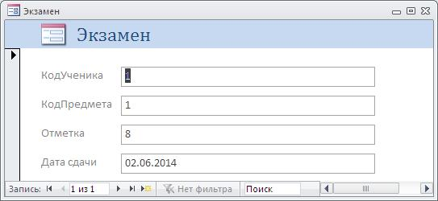
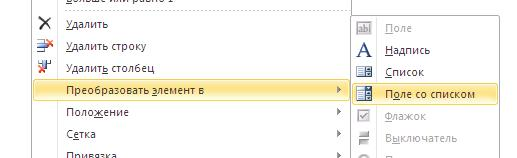
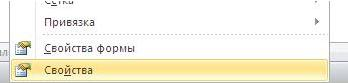
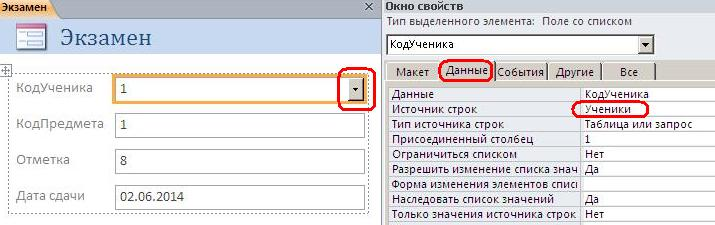
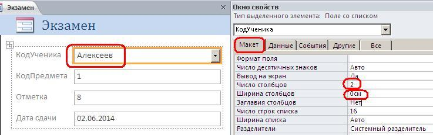
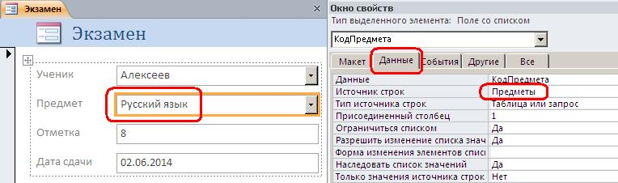
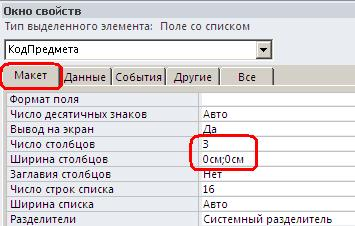

Практическая работа "Связывание таблиц базы данных"
Краткая справка по созданию формы с выпадающими списками
- Создайте форму Экзамены:

- Перейдите в режим Макет
- Выделите поле и вызовите контекстное меню:

- Вызовите через контекстное меню Cвойства поля и настройте источник данных:
 
- Затем настройте отображение данных в поле:

- Аналогично создайте поле со списком для предметов:
 
- Перейдите в режим Форма и внесите данные в базу.
|